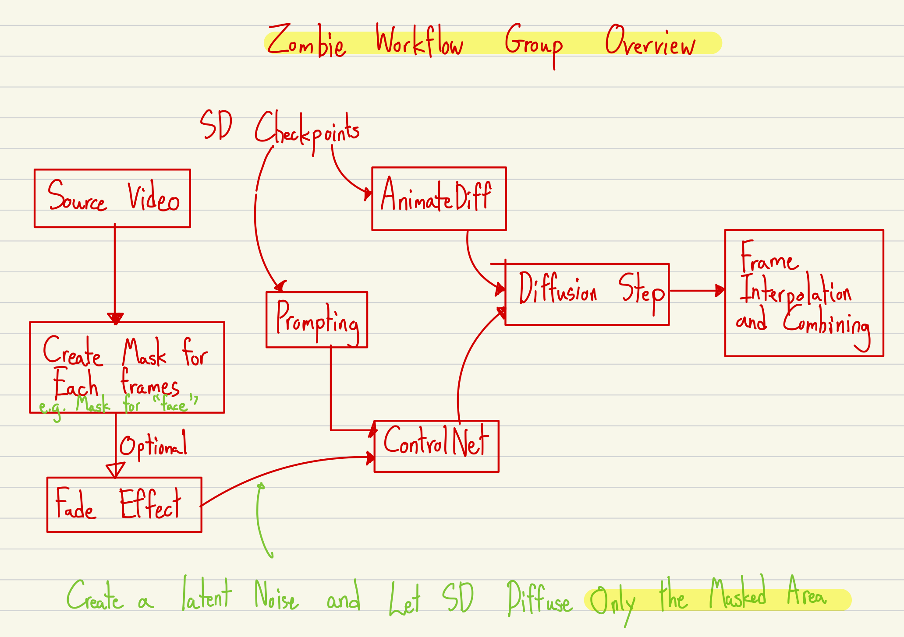

Create Filter Effect in ComfyUI
Posted on September 10, 2024
ComfyUI has revolutionized the way we interact with Stable Diffusion models, offering a powerful and flexible node-based interface for creating custom image generation workflows. In this tutorial, we'll explore how to create a unique filter effect using ComfyUI, inspired by the innovative techniques shared by Mick Mumpitz on YouTube.
Understanding the Workflow
The workflow we'll be using combines several powerful nodes to create a stunning filter effect. Here's a breakdown of the key components:
- Source Video: The initial input for the workflow.
- Create Mask for Each Frame: Generates masks for specific elements in each video frame.
- Fade Effect (Optional): Applies a fade effect to the video frames if desired.
- SD Checkpoints: A checkpoint in the process, likely related to Stable Diffusion models.
- Prompting: Adds instructions or prompts to guide the subsequent processes.
- AnimateDiff: Handles animations or differences between frames.
- ControlNet: A neural network component for controlling the generation or modification process.
- Diffusion Step: Applies a diffusion model, possibly for image generation or modification.
- Frame Interpolation and Combining: Creates intermediate frames and combines all frames into the final output.
Filter Effects
Original Video
Raccoon Filter Effect
Zombie Filter Effect
As you can see from the original video and the two filtered versions, this ComfyUI workflow allows for dramatic transformations. The Raccoon filter adds a playful, furry texture to the image, while the Zombie filter creates a more eerie, undead appearance. These examples demonstrate the versatility of the filter effects you can achieve using ComfyUI.
Implementing the Workflow
To implement this filter effect in your own projects, follow these steps:
- Download the workflow JSON file.
- Import the JSON file into ComfyUI.
- Adjust the parameters of each node to fine-tune the effect for your specific needs.
- Experiment with different input images to see how the filter affects various subjects and styles.
Remember, this workflow is just a starting point. Feel free to modify and expand upon it to create your own unique filter effects. The power of ComfyUI lies in its flexibility and the ability to combine nodes in creative ways.
Conclusion
By leveraging the advanced capabilities of ComfyUI, we've created a powerful and versatile filter effect that can dramatically enhance your Stable Diffusion outputs. This technique opens up new possibilities for artistic expression and image manipulation within the AI art generation ecosystem.
For more inspiring ComfyUI tutorials and techniques, be sure to check out Mick Mumpitz's YouTube channel. Happy creating!